Overview
In this project, I implement a basic rasterization pipeline. This is the last section of graphics pipeline, and
involves converting world coordinate triangles into pixels.
Once we implement the basic point in triangle tests, the same method is applied to create
color gradients using barycentric coordinates. And this is further extended to texture mapping. For each of these
methods, I also develop anti-aliasing methods like supersampling, pixel sampling, and level sampling. Using these
principles, one can develop shaders for the graphics cards to rasterize triangles as required.
Except for the algorithms themselves, I learnt the steps involved in converting a mesh into an output image.
I learnt how different rendering techniques affect the final image, and what parts to change if I want higher
quality vs higher performance.
The GitHub Pages can be found here.
Section I: Rasterization
Part 1: Rasterizing single-color triangles
In the algorithm, I iterate through the smallest rectangle that contains the given triangle. This is done by iterating between the smallest and largest x and y coordinate. This makes it more efficient than iterating through the whole image. For each pixel in this rectangle, I calculate the actual coordinate (p_sample) by adding 0.5 to the x and y values, this way the actual center of the pixel is checked. If this point lies inside the triangle, then the given color is drawn on that pixel in the buffer. The point in triangle test is done using the method shown in the lecture. Considering points p1, p2, p3, the vectors for each edge, v01, v12, and v20 are calculated. Then their normals n01, n12, n20, and the vector from each point "pi" to p_sample are also calculated. The dot product between this p_sample-pi vector and the normals indicated if the point is on the same side as the normals (+ve) or not (-ve). If for all the edges, each dot product has the same sign, then the point is inside the triangle. The edge test is done in a similar way, because here the dot product is 0. I had to make sure that if one dot product is zero, then the other 2 have the same sign.
Here are the results of the step one code on reference images 3, 4, 5, 6.
|
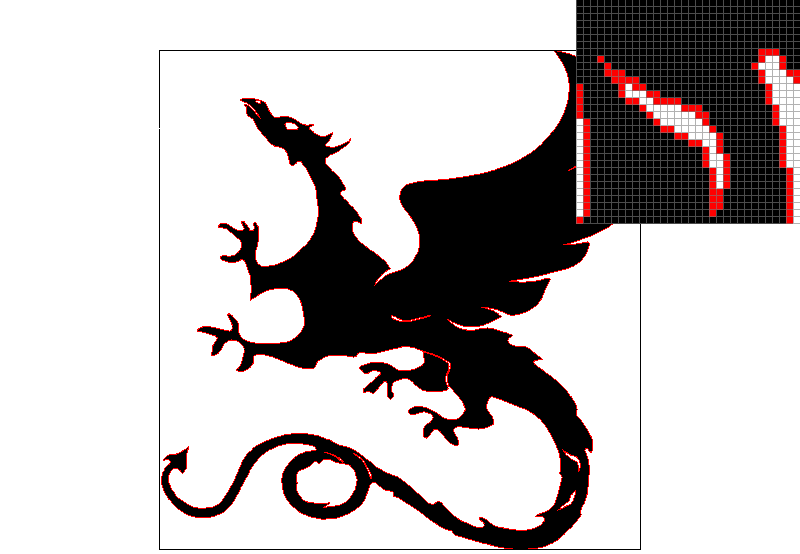
|
|

|

|
Part 2: Antialiasing triangles
My supersampling algorithm was the same as shown in lecture. The current pixel was divided based on the sample rate given. For example, a sample rate of 16 meant that the pixel was now considered to be a 4x4 grid. Let us call each box in this grid a sub pixel. This meant that instead of sampling the svg in the middle of the pixel, we would sample it in the middle of each sub-pixel: 16 times in each pixel for a rate of 16. Now we essentially have an image that is 16x the size of the initial image, and to render this properly, we simply average out each of the 16 sub pixels, and place the result in the corresponding pixel.The main data structures involved here are the framebuffer and the sample_buffer. The frame buffer is the actual buffer that is swapped with the current display buffer, and then displayed on the screen. The sample buffer is the temporary buffer that is first filled during rasterization, and then copied into the frame buffer. This is done because in supersampling, the size of the sample_buffer will be bigger than the framebuffer, based on the sampling rate.
Before supersampling, the edges were only made of solid colors, and created the effect of jaggies. This process is useful because now the edges consist of color gradients that make it seem like the "jaggies" are gone. That is, the edges are now smoother.
The first few modifications to the pipeline were made to adjust the size of the sample_buffer vector, based on the sample rate: the new size would be the height*width*sample_rate. This change was made to the RasterizerImp::set_sample_rate() and RasterizerImp::set_framebuffer_target() functions. The next change was to change the RasterizerImp::rasterize_point() function so that the lines and the points are not rasterized. Here, I basically apply the same color to all the sub-pixels in the pixel. The next change was to RasterizerImp::resolve_to_framebuffer(). Here, now we had to take the average of all the sub pixels, and then assigning it to the main framebuffer. For this, I add some loops to iterate over the subpixels of each pixel, and average the color values.
The final stage was to edit the triangle rasterizer. The main difference was to now sample the triangles based on the sample_rate. So, I changed the ranges of the loops to iterate over the bounding rectangle, while scaling these coordinates based on the sample rate. Then for each scaled x, y I calculate the actual coordinate in the original coordinate frame, and check if the center of the sub pixel belongs inside the triangle or not. Then I set the color of the respective vector entry in sample_buffer.
In the image with sample rate of 1, we can see that there are some floating pixels, and some really jagged edges. This is because even if the triangle was in the pixel, it did not cross the center, and that created these artifacts. As the sample rate increases, the chances of the edge of the triangle being detected are larger, and thus we can see that the pixels that were originally colorless, are now partially shaded to show the approximate percentage of the area that the triangle covers in the pixel. The smoothness of the edges gets notably better as we jump from 1x to 4x to 16x anti-aliasing.
|
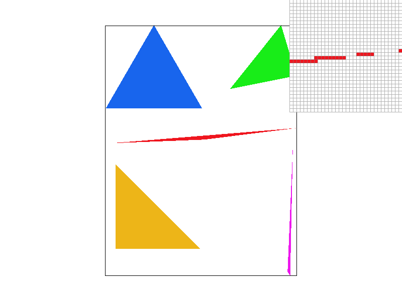
|
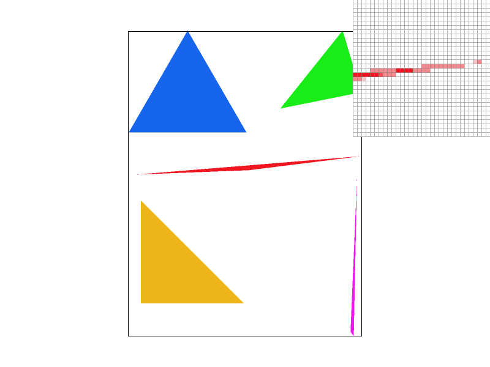
|
|
Part 3: Transforms
In my_robot (Figure 9), the robot is now wearing a red half-sleeve shirt and jeans, and waving both his hands in the air!

|
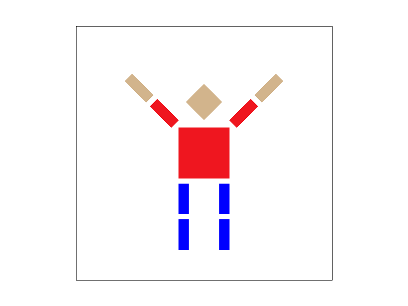
|
Section II: Sampling
Part 4: Barycentric coordinates
Barycentric coordinates are simply another coordinate system, but with respect to the vertices of the shape in consideration. In the case where each vertex has its own numerical attribute, like color, or mass, these coordinates can be used to linearly interpolate the value of the attribute at a random point inside the triangle. For example, in the triangle below, each vertex has a solid color: red, green and blue, and the colors linearly change when moving from one vertex to another.The barycentric coordinates are defined by 3 "weights" alpha, beta, and gamma, where all 3 add up to 1 - they are normalized. The barycentric coordinates of the three vertices in a triangle are (1 0 0), (0 1 0), (0 0 1). Each attribute can be weighted based on these 3: attr_A * alpha + attr_B * beta + attr_C * gamma, where A, B, C are the value of the attributes at the A, B, C vertices. Therefore, for the vertices, we get back the value of the attribute of the vertex. My implementation of these coordinates is the same as in our lecture. Consider a vertex A, and a point in the middle P. The first barycentric coordinate of each point is based on the ratio of the distance of P from the edge opposite A, to the distance of A from the edge opposite A.

|
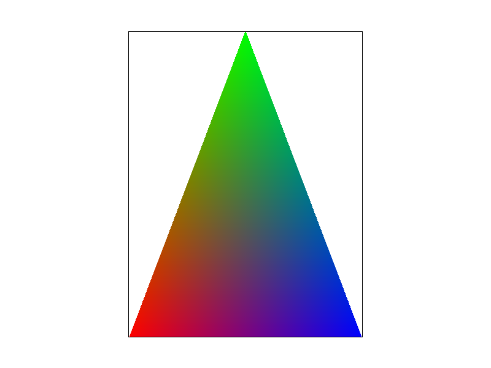
|
Part 5: "Pixel sampling" for texture mapping
Pixel sampling is the process of choosing a color value for each pixel in the buffer, usually from a reference texture image. If the texture map is considered to be a function, then pixel sampling here refers to sampling that "texture function" at the desired texture coordinates. For each edge of each triangle, we are given their corresponding texture coordinates. From this data, we can use barycentric coordinates to extrapolate the desired texture coordinates for each point in the triangle. Then using nearest or bilinear interpolation, we can calculate the color for the pixel for rasterizing. This can also be augmented by supersampling and performing either type of interpolation at the same time.Nearest neighbour sampling refers to simply choosing the color of the texel that is closest to the sampling coordinate. Bilinear interpolation is more complicated. It involves a weighted average of the colors of the texels surrounding the sampling position. This weighted average depends on the distance of the sampling position from each of the pixels around it. Essentially, there are 3 averages: one is the weighted average of the bottom row at the desired y coordinate. The next is the same for the top 2 pixels. And finally a weighted average between the values just calculated in the last 2 steps.
In the following images, we can see the difference that the method of pixel interpolation makes for 2 different sample rates. Consider the area where the 2 white lines meet. We can see the discontinuity of the lines in Figure 12, and the fact that this becomes much smoother in figure 13. In Fig 14, on the right side, we can see 2 rows of white lines where on of them starts very abruptly. This change is made much smoother when we use bilinear sampling. Though supersampling does improve the results a lot, the output is made even smoother when we use bilinear sampling. But, using bilinear sampling alone is not good enough to capture all the detail.
There will be a large difference between the 2 methods when scaling the image down by a large amount. In this case, bilinear sampling wont be very accurate, because a lot of data will be lost, as only 4 texels will be considered. But in higher rate supersampling, the algorithm will consider a larger number of points.
|
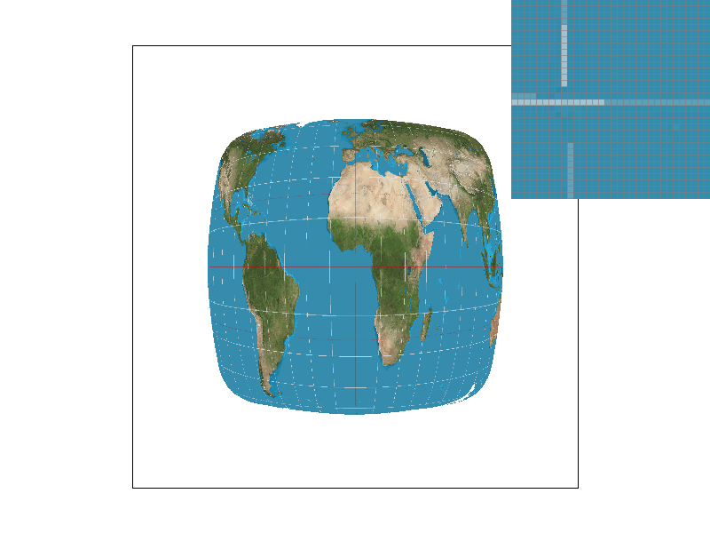
|
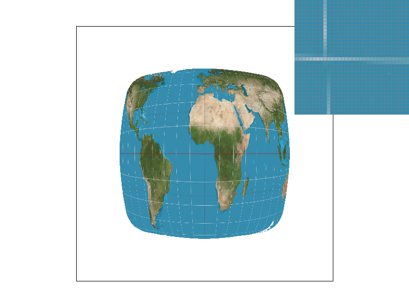
|
|
|
|
Part 6: "Level sampling" with mipmaps for texture mapping
When rendering a 3D scene, there are some textures that have to be mapped closer to the camera, and some that are further. The textures that are further away require mapping the same sized texture image onto a smaller triangle. This results in artifacts like moire patterns and jaggies. Super sampling is not very feasible here because of the computational overhead. In level sampling, each texture is scaled down multiple times into several images. This collection of textures of different sizes are called mipmaps. Depending on the scale of the texture area to the actual triangle area, an appropriate "level" or size of texture from the mipmap is selected. Usually, textures that are far away are mapped using the low-res images, and vice versa. This is called level sampling.Supersampling is the slowest, and takes the most amount of memory, because the larger scale buffer has to be saved first. This has the highest antialiasing power because all the colors are chosen from the highest quality image, and then averaged down. Linear interpolation in texture pixel sampling requires much less memory than supersampling, but the results are not as good. It is much faster than and more memory efficient that supersampling. The antialiasing power is not as strong as supersamping. Level sampling is for deciding which resolution texture to use. The textures are usually scaled down after blurring. So, when one uses something like trilinear sampling, the further pixels are more blurred. This method is very optimized, and is much faster than supersampling. It uses some extra memory to store the low resolution images, but that is not a large amount. The main antialiasing in this method depends on how the images are scaled down, and on how the pixel sampling is done. When bilinear sampling is used with linear level sampling, it is called trilinear sampling, and is much more efficient than supersampling. For the demonstration of my results, I chose the test6.svg file as it has clearly differentiable peaks and valleys. Because of this height difference, the mipmaps are easier to see. I used the following image as the texture. The small squares clearly show the blur, or the sharpness, as well as the resolution and the depth.
In the images shown below, I show all possible combinations of level and pixel sampling. From left to right, we can see the difference that pixel sampling makes. And from top to bottom, we can see the effect of level sampling. From nearest to bilinear pixel sampling, the images essentially become smoother, and there are less jaggies. And improving the level sampling method, improves other artifacts as well, like Moire patterns.
When going from Figure 17 to 18, we can see the edges becoming smoother in the pixel inspector. Moving on to the level sampling method, we can see clearly the Moire patterns in level zero sampling (Fig 17). In the same figure, we can also see that all the squares have well-defined edges. However, on moving to nearest level sampling in Fig 19 and 20, we can see that the patterns closer to us are clearer than the ones further away. This difference of levels is clearer in Fig 20. The parts of the image that are closer to us use a high definition image, and the ones further away use a lower resolution image. This causes the excessive blur in the texture further away. Note the stark difference in the blur when we move away from the 2 peaks in the image. This can also be seen in the pixel inspector in Fig 19 as a sudden change in definition of the edges. When we move to linear level sampling in fig 21 and 22, the main difference is that the transition from one level to another is smoother. That is, the stark difference from Fig 19, 20 has now been smoothed out. In the pixel inspector, in fig 21, the slow change in edge smoothness can be seen, especially when compared to that in Fig 19. Finally, notice that the Moire patterns from Fig 17, 18 are not present in Fig 21, 22.
|
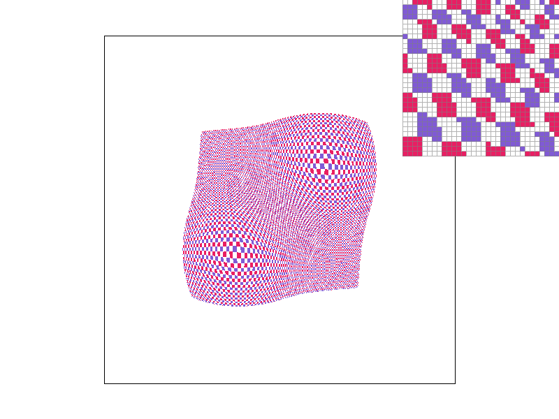
|
|
|
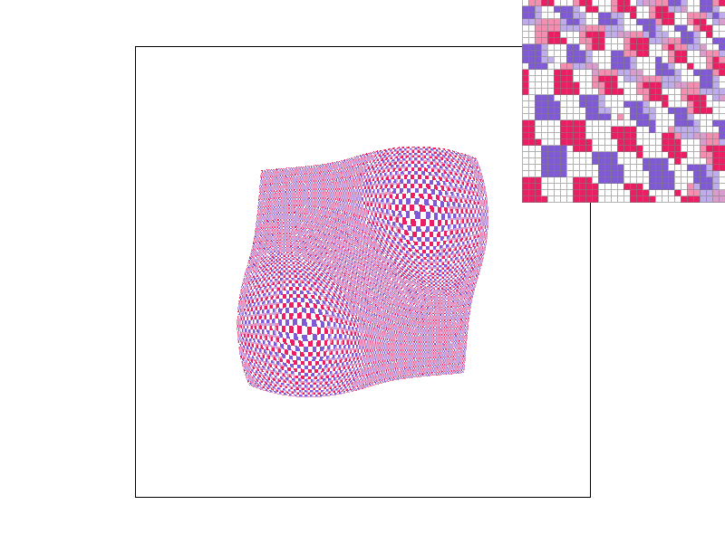
|
|
|
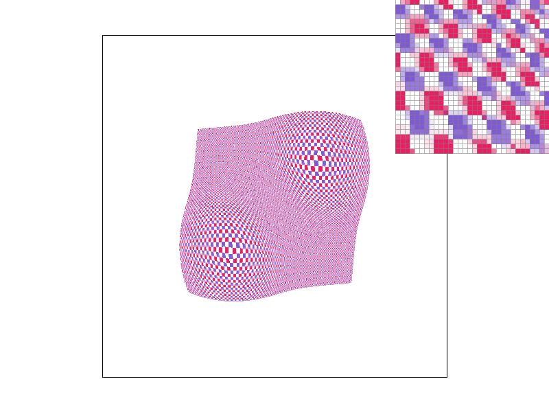
|
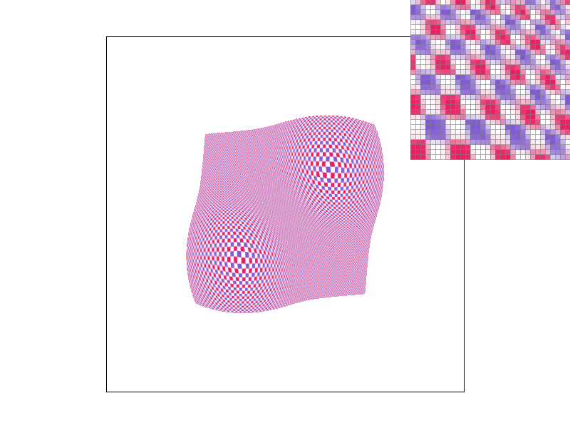
|
Section III: Art Competition
If you are not participating in the optional art competition, don't worry about this section!